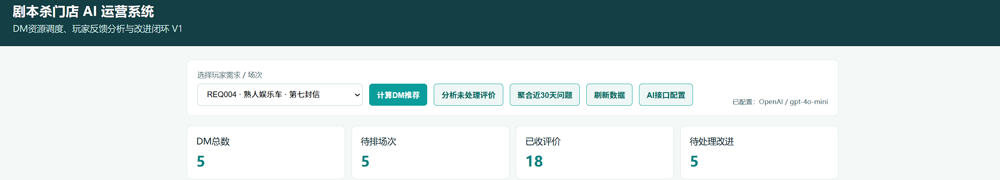
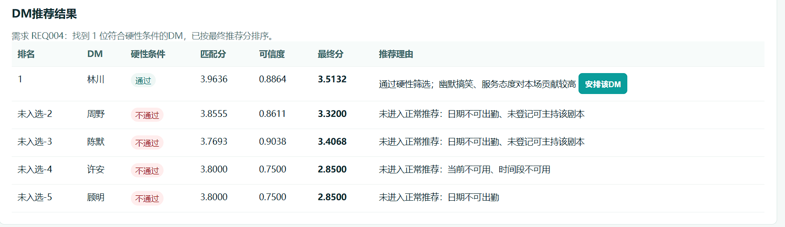
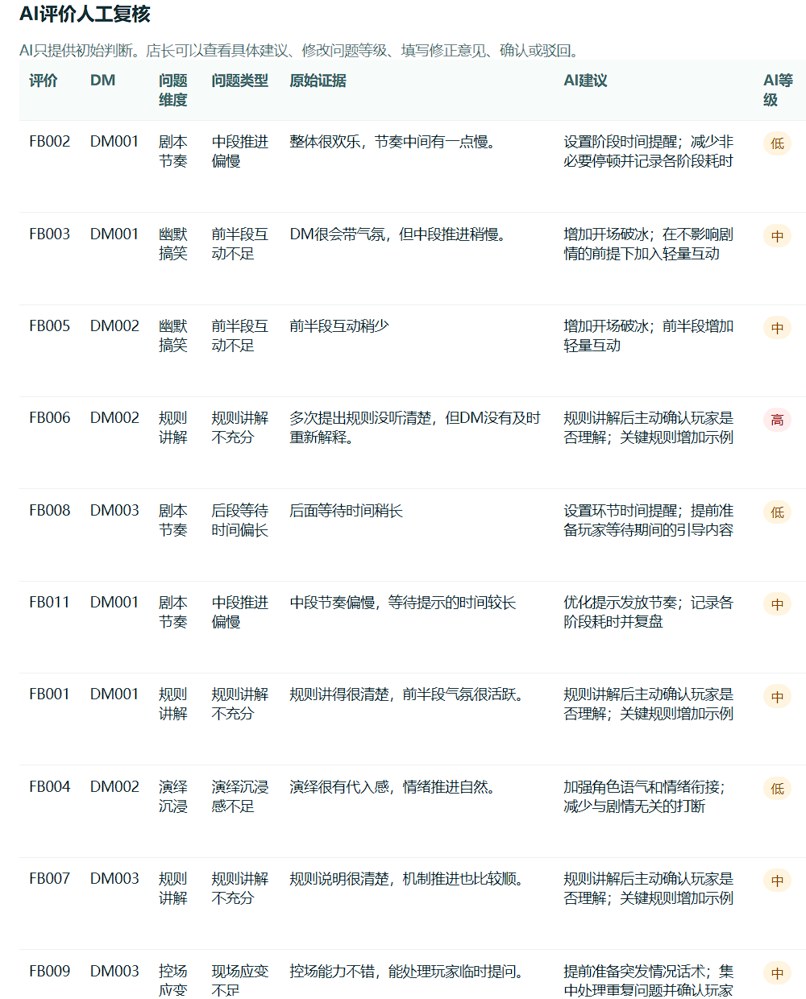
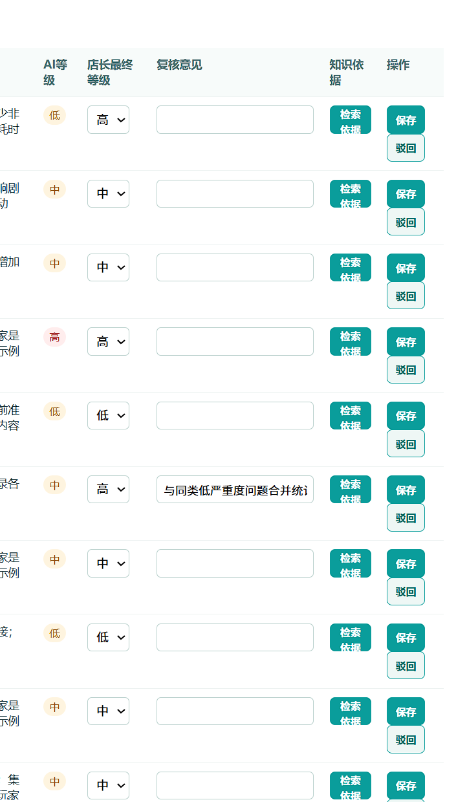
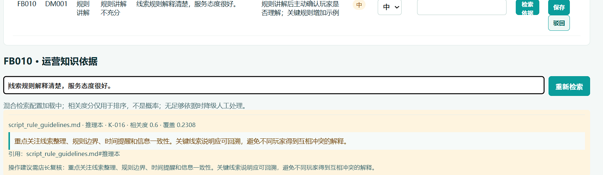
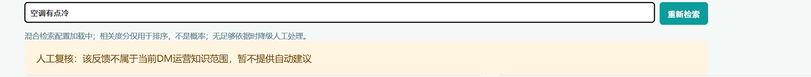
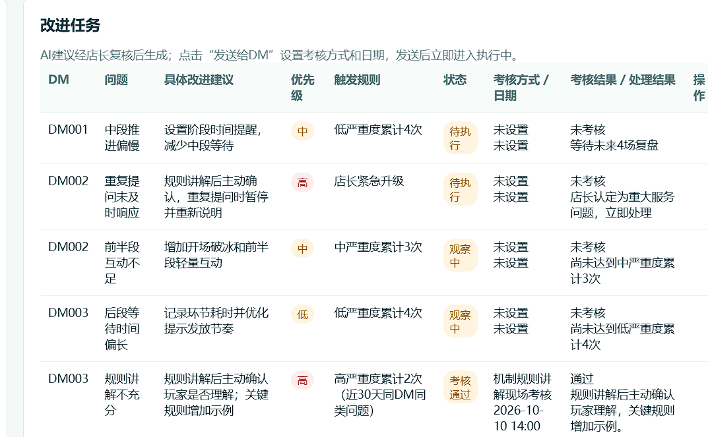
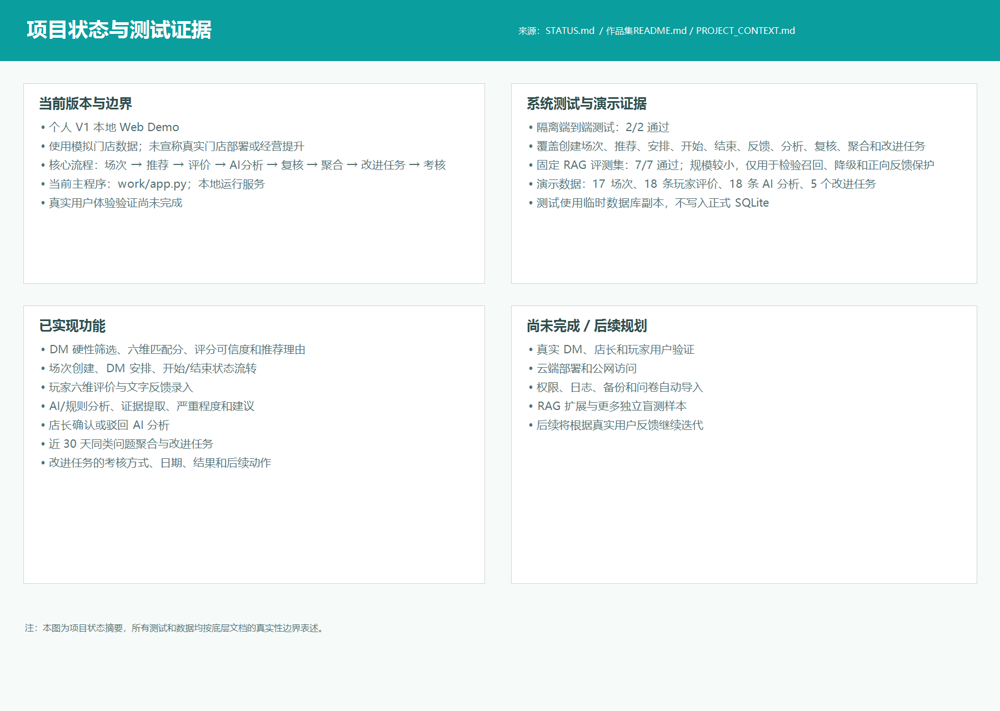

把硬约束交给规则
日期、时间、剧本能力和场次冲突由确定性规则处理，再用六维匹配分、评分可信度和推荐理由输出可解释结果。
PERSONAL V1 · AI PRODUCT OPERATIONS
剧本杀门店 AI 体验运营与资源调度助手：把 DM 推荐、玩家评价、AI 初步分析、店长复核、问题聚合和改进任务串成一条可追踪流程。

OPERATIONS FLOW
不是只生成建议，而是让建议有来源、有人复核、能进入任务并接受后续考核。
日期、时间、剧本能力和场次冲突由确定性规则处理，再用六维匹配分、评分可信度和推荐理由输出可解释结果。
AI 提取问题维度、原始证据、严重程度和建议；店长可以修改、确认或驳回，未确认结果不参与问题聚合。
近 30 天同一 DM 的同类问题达到阈值后形成改进任务，支持责任、状态、考核日期、结果和后续动作。
SELECTED EVIDENCE
截图来自本地 Demo；姓名和业务记录均为模拟演示数据。






QUALITY & BOUNDARIES
AI 产品运营不仅要展示成功路径，也要设计拒答、转人工和人工确认。

PROJECT STATUS
已完成本地 Demo、RAG 小型评测和隔离端到端测试；真实用户验证与云端部署仍是后续工作。